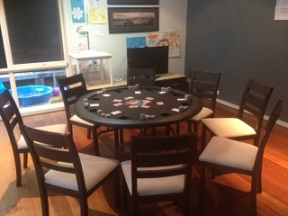
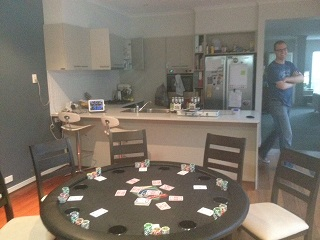

......because we all have to start somewhere
| Date | Location | Game | Players |
|---|---|---|---|
| {{tournaments.tournamentOne[0].eventDate}} | {{tournaments.tournamentOne[0].location}} | {{tournaments.tournamentOne[0].tournament}} | {{tournaments.tournamentOne[0].noOfPlayers}} |
| Date | Location | Game | Players |
|---|---|---|---|
| {{tournaments.tournamentTwo[0].eventDate}} | {{tournaments.tournamentTwo[0].location}} | {{tournaments.tournamentTwo[0].tournament}} | {{tournaments.tournamentTwo[0].noOfPlayers}} |
| Position | Name | Points | Won |
|---|---|---|---|
| {{result.position}}{{positionSuffix(result.position)}} | {{result.name}} | {{result.points}} | {{result.cash | currency}} |
| Position | Name | Points | Won |
|---|---|---|---|
| {{result.position}}{{positionSuffix(result.position)}} | {{result.name}} | {{result.points}} | {{result.cash | currency}} |
| Position | Name | Played | Won | Win ratio | Ave points | Ave position | Points |
|---|---|---|---|---|---|---|---|
| {{$index + 1}}{{positionSuffix($index + 1)}} | {{result.name}} | {{result.played}} | {{result.won}} | {{result.won / result.played * 100| number:2}} % | {{result.points / result.played | number:2}} | {{result.averagePosition | number:2}} | {{result.points}} |
 The inaugural square (or oval as Jade pointed out) poker tournament had some first time players quickly get  up to speed with the structure and rules with most players winning a hand at some point during the night.
The first game had players all jostling for chip leader with some unlucky breaks for some (for example, two players hitting full houses but with the bigger full house taking down the pot). Alleged poker expert Brian forgetting it takes 5 cards of the same suit to make a flush, and some confusion about whether a flush is higher than a straight (it's a flush!) meant a few lost chips but it didn't detract too much from the overall game and betting.
Despite some good cards, Michael was unluckily the first out with most of his chips heading in Steve's direction (who seemed destined to avoid folding any cards at any cost). With the blinds increasing at a considerable rate, he was followed closely by Jade, Paul and Mark. Dave battled on valiantly but was just out of the top 3 finishing in a respectable 4th place. With only Brian, Ben and Steve left, Brian was the clear chip leader after some aggressive betting, so a deal was struck to end the game there and then. With Ben having slightly higher remaining chips than Steve, Brian was placed first with Ben officially coming in second place. With players keen to initiate a second game, Brian frantically setup up the starting chips whilst Mark entertained the players taste buds with his "master chef" award winning nachos.
The second game was at a more relaxed pace with golf conversation abound but poker rule "nazi" Brian kept things ticking a long at a fair pace. Again Michael was unlucky losing a sizeable chip amount with 3 sixes to yet another straight by Steve (continuing his reluctance to fold anything). Leaving Michael short stacked and out again in eighth, lady luck was not his friend for the night (and when cross examined she denied any knowledge of him).
Brian the first game winner was suprisingly next out in seventh (was the alcohol starting to take its toll?), but took on the dealer responsibility anyway and watched as Paul and Jade followed suit, although they got to retire to the "footie zone" in the next room (was this part of their plan)?
Perennial "just missing out on the top 3" Dave was next out in 4th place again leaving Ben, Steve and Mark to fight it out for the top 3 places. No deals were to be struck, with sizeable pots moving in all directions, before Steve was again out 3rd. Ben tried his hardest to get that elusive win, but some strong betting and good cards for Mark saw him win the final hand and have all the $16,000 worth of chips in front of him.
Early into Sunday morning, alcohol imbibed players slowly left into the cool air ready for their doona recovery permeated with dreams of chips, pocket aces and nachos, leaving Brian and Ben musing over the poker proceedings with a nightcap. Their poker reverie was suprisingly interrupted by Jade returning with his dog who also decided to stay for one last swifty (that's Jade, not the dog). Although, Jades choice of a longneck (or Darwin stubby), might not constitute a swifty!
So a special mention has to be made to the consistent players Ben and Steve for making the top 3 on both occasions and leaving Ben at the top of the points ladder after the first event. Also, a heartfelt thanks to Ben for hosting the event (although maybe next time we keep the door closed as our vociferous shenanigans were heard by a few of the spouses and children - oops)
Until the next exciting installment..............